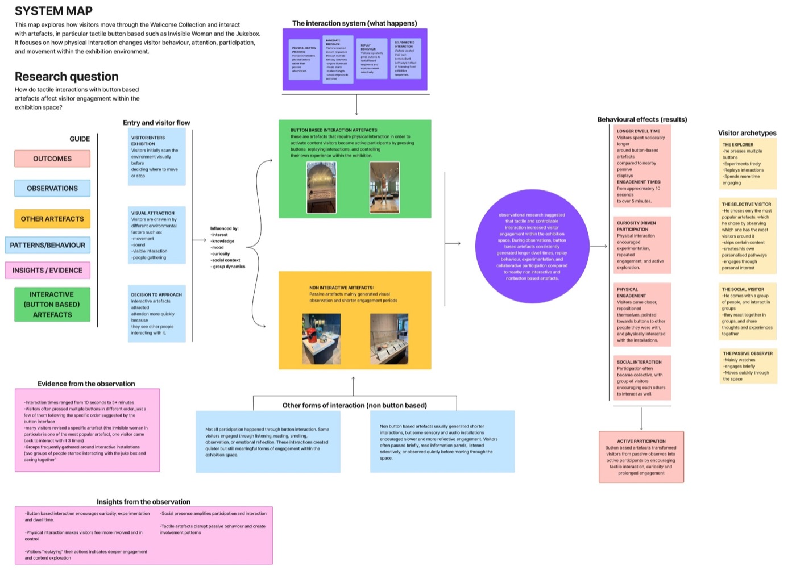
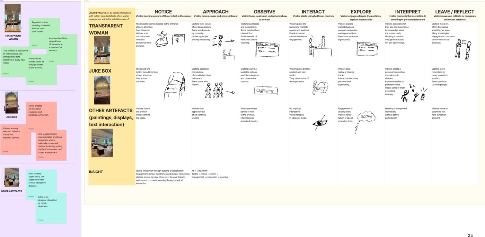
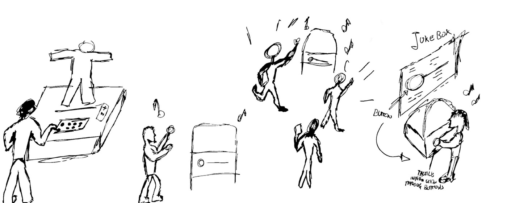
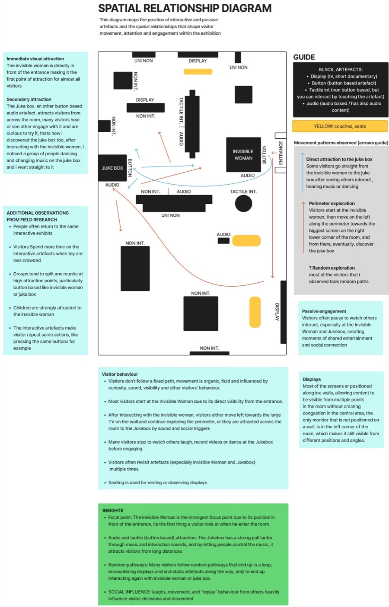
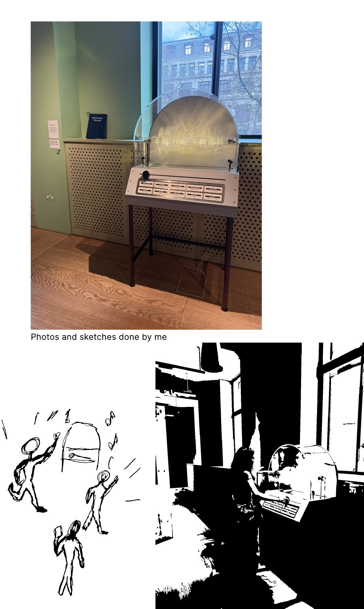

Hands-On: Tactile Interaction at the Wellcome Collection
A field study of how button-based exhibits turn museum visitors from observers into participants.
University project, Curiosity and Creativity: Methods and Practices, BA (Hons) UX Design, LCC (UAL).
Project overview
Year: 2026
Team: Solo
My role: Field research, observation, analysis and synthesis, system mapping
Methods: Non-participant observation, autoethnography, behavioural coding, research wall, journey map, spatial mapping
Site: Being Human exhibition, Wellcome Collection, London
The challenge
The brief focused on the first half of the Double Diamond, Discover and Define. Instead of designing a solution, the task was to observe how people experience a real exhibition and turn that into evidence-based insight. Using the Being Human exhibition as the site, I had to find a focused question that could be answered through observation alone.
Finding the right question
My question changed three times, and that was the most useful part of the project.
Trust. I started broad, asking how exhibitions build visitor trust. But trust can’t be seen in behaviour, so I couldn’t observe it.
Identity, with students. I narrowed to how students engage with identity-based content. Tutor feedback exposed the flaw: I couldn’t confirm who was a student without asking, and non-participant research doesn’t allow that.
Participation. Back in the gallery, the strongest pattern was obvious. Visitors kept pressing buttons. That became my final question: how do tactile interactions with button-based artefacts affect visitor engagement within the exhibition space?
Research and analysis
I focused on two button-based exhibits, the Transparent Woman (press a button, an organ lights up) and the Jukebox (choose a track, the room hears it), and compared them with nearby non-interactive displays. I coded the behaviours I saw, clustered them on a research wall alongside secondary sources, and mapped how visitors moved through the room in a journey map and a spatial relationship diagram.
Key insights
Interaction holds attention. Engagement with the Transparent Woman ranged from a few seconds to over five minutes, far longer than nearby passive displays.
Control drives replay. Visitors rarely pressed once. They tested combinations, replayed outcomes and came back later.
Participation is contagious. People often watched others interact first, then joined in. The Jukebox turned strangers into groups, with some dancing together.
Visitors don’t follow the route. Movement was curiosity-led: drawn by sound, by activity, and by what other people were doing.
Outcome
A system map that brings the findings together. It shows how visitors move through the space, the stages of a tactile interaction (attraction, approach, interact, replay, share), four visitor archetypes (the Explorer, the Selective Visitor, the Social Visitor, the Passive Observer), and four How might we questions as opportunity areas for future exhibition design, such as how might tactile interaction encourage replay and longer engagement without overwhelming visitors?




